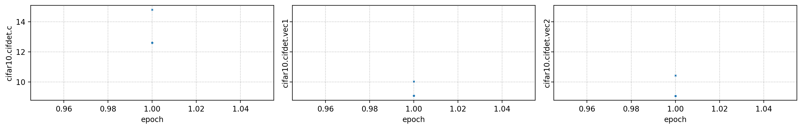
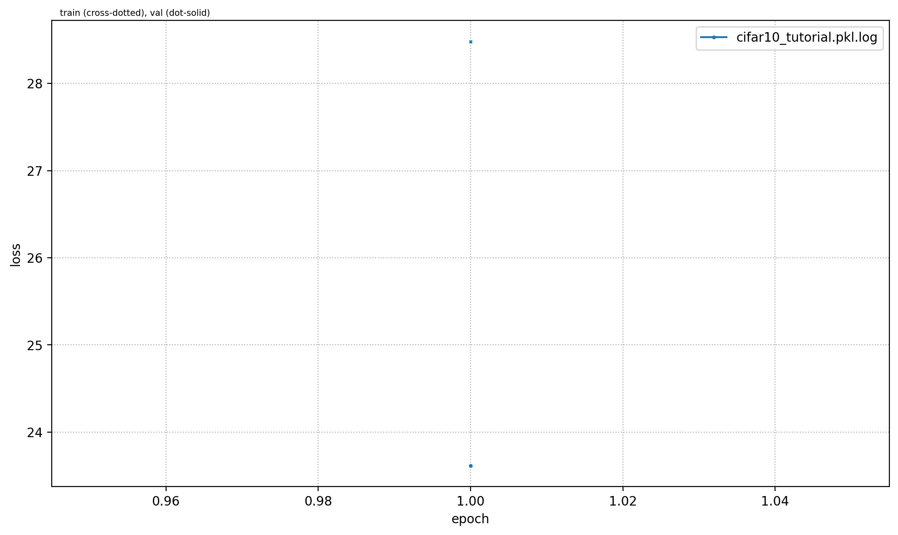
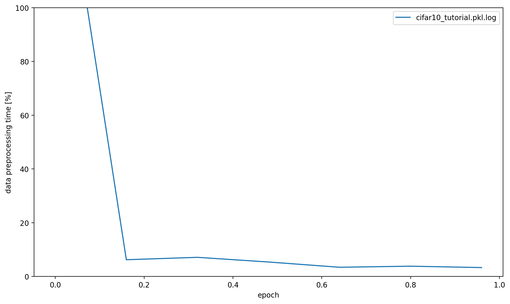
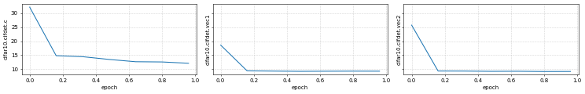
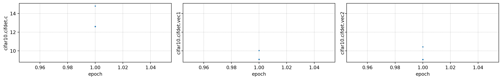
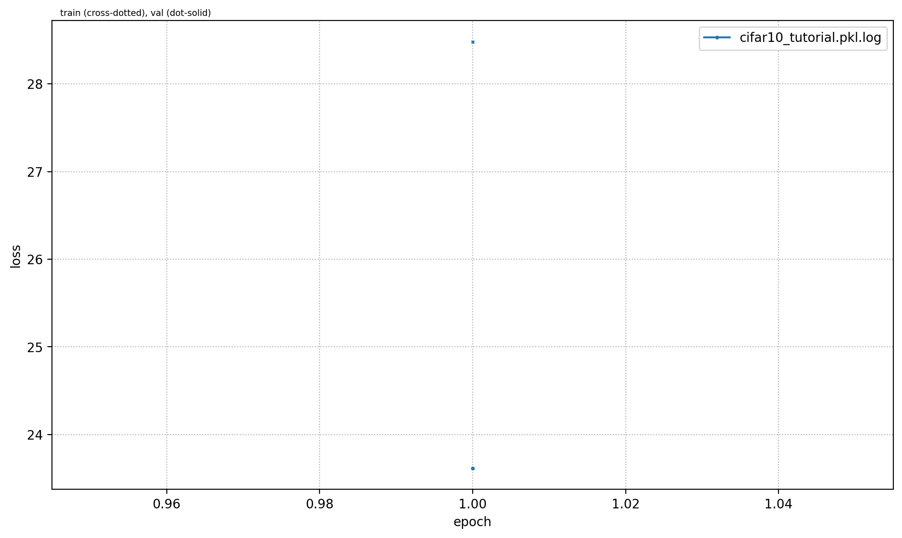
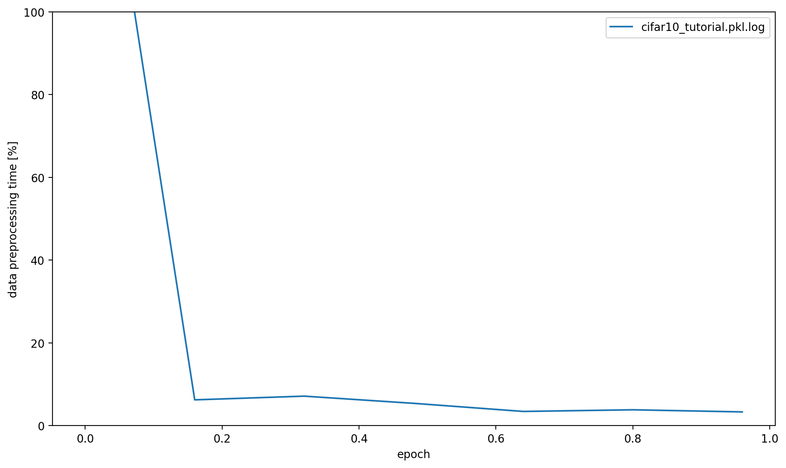
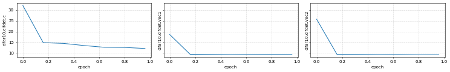

Cifar10¶
This plugin is part of openpifpaf.contrib. It demonstrates the plugin architecture.
There already is a nice dataset for CIFAR10 in torchvision and a related PyTorch tutorial.
The plugin adds a DataModule that uses this dataset.
Let’s start with them setup for this notebook and registering all available OpenPifPaf plugins:
import openpifpaf
import torchvision
%matplotlib inline
openpifpaf.show.Canvas.show = True
openpifpaf.plugins.register()
print(openpifpaf.plugins.REGISTERED)
{'openpifpaf.contrib.cifar10': <module 'openpifpaf.contrib.cifar10' from '/opt/hostedtoolcache/Python/3.7.9/x64/lib/python3.7/site-packages/openpifpaf/contrib/cifar10/__init__.py'>}
Next, we configure and instantiate the Cifar10 datamodule and look at the configured head metas:
# configure
openpifpaf.contrib.cifar10.datamodule.Cifar10.debug = True
openpifpaf.contrib.cifar10.datamodule.Cifar10.batch_size = 1
# instantiate and inspect
datamodule = openpifpaf.contrib.cifar10.datamodule.Cifar10()
datamodule.head_metas
[CifDet(name='cifdet', dataset='cifar10', head_index=None, base_stride=None, upsample_stride=1, categories=('plane', 'car', 'bird', 'cat', 'deer', 'dog', 'frog', 'horse', 'ship', 'truck'))]
We see here that CIFAR10 is being treated as a detection dataset (CifDet) and has 10 categories.
To create a network, we use the factory() function that takes the name of the base network cifar10net and the list of head metas.
net = openpifpaf.network.factory(base_name='cifar10net', head_metas=datamodule.head_metas)
We can inspect the training data that is returned from datamodule.train_loader():
# configure visualization
openpifpaf.visualizer.Base.all_indices = [('cifdet', 9)] # category 9 = truck
openpifpaf.visualizer.CifDet.show_regressions = True
# Create a wrapper for a data loader that iterates over a set of matplotlib axes.
# The only purpose is to set a different matplotlib axis before each call to
# retrieve the next image from the data_loader so that it produces multiple
# debug images in one canvas side-by-side.
def loop_over_axes(axs, data_loader):
previous_common_ax = openpifpaf.visualizer.Base.common_ax
train_loader_iter = iter(data_loader)
for ax in axs.reshape(-1):
openpifpaf.visualizer.Base.common_ax = ax
yield next(train_loader_iter)
openpifpaf.visualizer.Base.common_ax = previous_common_ax
# create a canvas and loop over the first few entries in the training data
with openpifpaf.show.canvas(ncols=6, nrows=3, figsize=(10, 5)) as axs:
for images, targets, meta in loop_over_axes(axs, datamodule.train_loader()):
pass

Training¶
We train a very small network, cifar10net, for only one epoch. Afterwards, we will investigate its predictions.
!python -m openpifpaf.train --dataset=cifar10 --basenet=cifar10net --epochs=1 --log-interval=500 --lr-warm-up-epochs=0.1 --lr=3e-3 --batch-size=16 --loader-workers=2 --output=cifar10_tutorial.pkl
INFO:openpifpaf.logger:{'type': 'process', 'argv': ['/opt/hostedtoolcache/Python/3.7.9/x64/lib/python3.7/site-packages/openpifpaf/train.py', '--dataset=cifar10', '--basenet=cifar10net', '--epochs=1', '--log-interval=500', '--lr-warm-up-epochs=0.1', '--lr=3e-3', '--batch-size=16', '--loader-workers=2', '--output=cifar10_tutorial.pkl'], 'args': {'quiet': False, 'debug': False, 'log_stats': False, 'shufflenetv2_pretrained': True, 'shufflenetv2k_input_conv2_stride': 0, 'shufflenetv2k_input_conv2_outchannels': None, 'shufflenetv2k_stage4_dilation': 1, 'shufflenetv2k_kernel': 5, 'shufflenetv2k_instance_norm': False, 'shufflenetv2k_group_norm': False, 'resnet_pretrained': True, 'resnet_pool0_stride': 0, 'resnet_input_conv_stride': 2, 'resnet_input_conv2_stride': 0, 'resnet_block5_dilation': 1, 'resnet_remove_last_block': False, 'cf3_dropout': 0.0, 'cf3_inplace_ops': True, 'checkpoint': None, 'basenet': 'cifar10net', 'two_scale': False, 'multi_scale': False, 'multi_scale_hflip': True, 'cross_talk': 0.0, 'download_progress': True, 'head_consolidation': 'filter_and_extend', 'lambdas': None, 'r_smooth': 0.0, 'regression_loss': 'laplace', 'background_weight': 1.0, 'b_scale': 1.0, 'focal_gamma': 1.0, 'auto_tune_mtl': False, 'auto_tune_mtl_variance': False, 'task_sparsity_weight': 0.0, 'cif_side_length': 4, 'caf_min_size': 3, 'caf_fixed_size': False, 'caf_aspect_ratio': 0.0, 'encoder_suppress_selfhidden': True, 'momentum': 0.9, 'beta2': 0.999, 'adam_eps': 1e-06, 'nesterov': True, 'weight_decay': 0.0, 'adam': False, 'amsgrad': False, 'lr': 0.003, 'lr_decay': [], 'lr_decay_factor': 0.1, 'lr_decay_epochs': 1.0, 'lr_warm_up_start_epoch': 0, 'lr_warm_up_epochs': 0.1, 'lr_warm_up_factor': 0.001, 'lr_warm_restarts': [], 'lr_warm_restart_duration': 0.5, 'dataset': 'cifar10', 'loader_workers': 2, 'batch_size': 16, 'dataset_weights': None, 'cocodet_train_annotations': 'data-mscoco/annotations/instances_train2017.json', 'cocodet_val_annotations': 'data-mscoco/annotations/instances_val2017.json', 'cocodet_train_image_dir': 'data-mscoco/images/train2017/', 'cocodet_val_image_dir': 'data-mscoco/images/val2017/', 'cocodet_square_edge': 513, 'cocodet_extended_scale': False, 'cocodet_orientation_invariant': 0.0, 'cocodet_blur': 0.0, 'cocodet_augmentation': True, 'cocodet_rescale_images': 1.0, 'cocodet_upsample': 1, 'cocokp_train_annotations': 'data-mscoco/annotations/person_keypoints_train2017.json', 'cocokp_val_annotations': 'data-mscoco/annotations/person_keypoints_val2017.json', 'cocokp_train_image_dir': 'data-mscoco/images/train2017/', 'cocokp_val_image_dir': 'data-mscoco/images/val2017/', 'cocokp_square_edge': 385, 'cocokp_extended_scale': False, 'cocokp_orientation_invariant': 0.0, 'cocokp_blur': 0.0, 'cocokp_augmentation': True, 'cocokp_rescale_images': 1.0, 'cocokp_upsample': 1, 'cocokp_min_kp_anns': 1, 'cocokp_eval_test2017': False, 'cocokp_eval_testdev2017': False, 'coco_eval_annotation_filter': True, 'coco_eval_long_edge': 641, 'coco_eval_extended_scale': False, 'coco_eval_orientation_invariant': 0.0, 'cifar10_root_dir': 'data-cifar10/', 'cifar10_download': False, 'save_all': None, 'show': False, 'image_width': None, 'image_height': None, 'image_dpi_factor': 1.0, 'image_min_dpi': 50.0, 'show_file_extension': 'png', 'textbox_alpha': 0.5, 'text_color': 'white', 'monocolor_connections': False, 'line_width': None, 'skeleton_solid_threshold': 0.5, 'show_box': False, 'white_overlay': False, 'show_joint_scales': False, 'show_joint_confidences': False, 'show_decoding_order': False, 'show_frontier_order': False, 'show_only_decoded_connections': False, 'video_fps': 10, 'video_dpi': 100, 'debug_cifhr': False, 'debug_cif_c': False, 'debug_cif_v': False, 'debug_cifdet_c': False, 'debug_cifdet_v': False, 'debug_caf_c': False, 'debug_caf_v': False, 'debug_indices': [], 'debug_images': False, 'output': 'cifar10_tutorial.pkl', 'stride_apply': 1, 'epochs': 1, 'val_interval': 1, 'train_batches': None, 'val_batches': None, 'fix_batch_norm': False, 'ema': 0.01, 'clip_grad_norm': 0.0, 'log_interval': 500, 'disable_cuda': False, 'profile': None, 'device': device(type='cpu'), 'pin_memory': False}, 'version': '0+untagged.1.g507d236', 'plugin_versions': {}, 'hostname': 'fv-az68'}
INFO:openpifpaf.network.basenetworks:cifar10net: stride = 16, output features = 128
INFO:openpifpaf.network.losses:multihead loss: ['cifar10.cifdet.c', 'cifar10.cifdet.vec1', 'cifar10.cifdet.vec2'], [1.0, 1.0, 1.0]
INFO:openpifpaf.optimize:SGD optimizer
INFO:openpifpaf.network.trainer:{'type': 'config', 'field_names': ['cifar10.cifdet.c', 'cifar10.cifdet.vec1', 'cifar10.cifdet.vec2']}
INFO:openpifpaf.network.trainer:{'type': 'train', 'epoch': 0, 'batch': 0, 'n_batches': 3125, 'time': 0.041, 'data_time': 0.078, 'lr': 3e-06, 'loss': 68.803, 'head_losses': [31.006, 15.442, 22.355]}
INFO:openpifpaf.network.trainer:{'type': 'train', 'epoch': 0, 'batch': 500, 'n_batches': 3125, 'time': 0.025, 'data_time': 0.002, 'lr': 0.003, 'loss': 27.434, 'head_losses': [15.385, 5.68, 6.369]}
INFO:openpifpaf.network.trainer:{'type': 'train', 'epoch': 0, 'batch': 1000, 'n_batches': 3125, 'time': 0.027, 'data_time': 0.002, 'lr': 0.003, 'loss': 26.03, 'head_losses': [15.407, 5.341, 5.281]}
INFO:openpifpaf.network.trainer:{'type': 'train', 'epoch': 0, 'batch': 1500, 'n_batches': 3125, 'time': 0.027, 'data_time': 0.002, 'lr': 0.003, 'loss': 24.541, 'head_losses': [14.038, 5.362, 5.141]}
INFO:openpifpaf.network.trainer:{'type': 'train', 'epoch': 0, 'batch': 2000, 'n_batches': 3125, 'time': 0.025, 'data_time': 0.001, 'lr': 0.003, 'loss': 24.695, 'head_losses': [14.238, 5.279, 5.178]}
INFO:openpifpaf.network.trainer:{'type': 'train', 'epoch': 0, 'batch': 2500, 'n_batches': 3125, 'time': 0.024, 'data_time': 0.002, 'lr': 0.003, 'loss': 23.197, 'head_losses': [12.986, 5.246, 4.965]}
INFO:openpifpaf.network.trainer:{'type': 'train', 'epoch': 0, 'batch': 3000, 'n_batches': 3125, 'time': 0.027, 'data_time': 0.002, 'lr': 0.003, 'loss': 24.212, 'head_losses': [13.853, 5.321, 5.038]}
INFO:openpifpaf.network.trainer:applying ema
INFO:openpifpaf.network.trainer:{'type': 'train-epoch', 'epoch': 1, 'loss': 28.07635, 'head_losses': [15.42485, 6.18655, 6.46495], 'time': 88.7, 'n_clipped_grad': 0, 'max_norm': 0.0}
INFO:openpifpaf.network.trainer:{'type': 'val-epoch', 'epoch': 1, 'loss': 23.03058, 'head_losses': [13.28815, 4.90229, 4.84014], 'time': 8.9}
Plot Training Logs¶
You can create a set of plots from the command line with python -m openpifpaf.logs cifar10_tutorial.pkl.log. You can also overlay multiple runs. Below we call the plotting code from that command directly to show the output in this notebook.
import openpifpaf.logs
openpifpaf.logs.Plots(['cifar10_tutorial.pkl.log']).show_all()
{'cifar10_tutorial.pkl.log': ['--dataset=cifar10',
'--basenet=cifar10net',
'--epochs=1',
'--log-interval=500',
'--lr-warm-up-epochs=0.1',
'--lr=3e-3',
'--batch-size=16',
'--loader-workers=2',
'--output=cifar10_tutorial.pkl']}

/opt/hostedtoolcache/Python/3.7.9/x64/lib/python3.7/site-packages/openpifpaf/logs.py:146: MatplotlibDeprecationWarning: The 'nonposy' parameter of __init__() has been renamed 'nonpositive' since Matplotlib 3.3; support for the old name will be dropped two minor releases later.
ax.set_yscale('log', nonposy='clip')
 







/opt/hostedtoolcache/Python/3.7.9/x64/lib/python3.7/site-packages/openpifpaf/logs.py:270: MatplotlibDeprecationWarning: The 'nonposy' parameter of __init__() has been renamed 'nonpositive' since Matplotlib 3.3; support for the old name will be dropped two minor releases later.
ax.set_yscale('log', nonposy='clip')
cifar10_tutorial.pkl.log: {'message': None, 'levelname': 'INFO', 'name': 'openpifpaf.network.trainer', 'asctime': '2020-10-17 08:39:16,921', 'type': 'train', 'epoch': 0, 'batch': 3000, 'n_batches': 3125, 'time': 0.027, 'data_time': 0.002, 'lr': 0.003, 'loss': 24.212, 'head_losses': [13.853, 5.321, 5.038]}
Prediction¶
First using CLI:
!python -m openpifpaf.predict --checkpoint cifar10_tutorial.pkl.epoch001 images/cifar10_*.png --seed-threshold=0.1 --json-output .
!cat cifar10_*.json
INFO:openpifpaf.decoder.cifdet:annotations 6, decoder = 0.003s
INFO:__main__:batch 0: images/cifar10_airplane4.png
INFO:openpifpaf.decoder.cifdet:annotations 6, decoder = 0.002s
INFO:__main__:batch 1: images/cifar10_automobile10.png
INFO:openpifpaf.decoder.cifdet:annotations 9, decoder = 0.002s
INFO:__main__:batch 2: images/cifar10_ship7.png
INFO:openpifpaf.decoder.cifdet:annotations 10, decoder = 0.003s
INFO:__main__:batch 3: images/cifar10_truck8.png
[{"category_id": 1, "category": "plane", "score": 0.25, "bbox": [5.17, 5.29, 20.94, 20.83]}, {"category_id": 9, "category": "ship", "score": 0.023, "bbox": [4.81, 5.01, 21.03, 21.06]}, {"category_id": 3, "category": "bird", "score": 0.014, "bbox": [5.01, 5.22, 20.98, 20.93]}, {"category_id": 10, "category": "truck", "score": 0.012, "bbox": [5.04, 4.84, 20.95, 21.09]}, {"category_id": 5, "category": "deer", "score": 0.011, "bbox": [4.92, 4.92, 21.01, 20.92]}, {"category_id": 4, "category": "cat", "score": 0.01, "bbox": [4.86, 5.03, 21.03, 20.98]}][{"category_id": 2, "category": "car", "score": 0.242, "bbox": [4.91, 4.91, 21.03, 21.11]}, {"category_id": 10, "category": "truck", "score": 0.023, "bbox": [4.74, 5.13, 20.98, 21.04]}, {"category_id": 9, "category": "ship", "score": 0.019, "bbox": [4.91, 5.18, 21.18, 21.14]}, {"category_id": 1, "category": "plane", "score": 0.016, "bbox": [5.13, 4.9, 20.93, 21.01]}, {"category_id": 8, "category": "horse", "score": 0.011, "bbox": [5.1, 4.9, 20.91, 21.02]}, {"category_id": 4, "category": "cat", "score": 0.01, "bbox": [4.96, 5.03, 21.0, 21.06]}][{"category_id": 1, "category": "plane", "score": 0.185, "bbox": [4.95, 4.89, 20.96, 20.95]}, {"category_id": 9, "category": "ship", "score": 0.018, "bbox": [4.77, 4.93, 21.0, 20.94]}, {"category_id": 10, "category": "truck", "score": 0.017, "bbox": [4.85, 5.13, 20.96, 20.96]}, {"category_id": 2, "category": "car", "score": 0.017, "bbox": [4.82, 4.97, 20.94, 20.93]}, {"category_id": 3, "category": "bird", "score": 0.012, "bbox": [4.73, 4.85, 21.05, 21.0]}, {"category_id": 8, "category": "horse", "score": 0.012, "bbox": [4.92, 4.97, 21.0, 21.07]}, {"category_id": 4, "category": "cat", "score": 0.012, "bbox": [4.94, 5.11, 21.07, 21.07]}, {"category_id": 6, "category": "dog", "score": 0.011, "bbox": [4.95, 5.05, 21.13, 21.01]}, {"category_id": 5, "category": "deer", "score": 0.011, "bbox": [4.9, 4.9, 21.09, 21.04]}][{"category_id": 1, "category": "plane", "score": 0.177, "bbox": [5.06, 4.92, 21.02, 20.97]}, {"category_id": 9, "category": "ship", "score": 0.017, "bbox": [4.99, 4.94, 21.04, 21.06]}, {"category_id": 10, "category": "truck", "score": 0.017, "bbox": [5.05, 5.12, 20.97, 20.96]}, {"category_id": 2, "category": "car", "score": 0.016, "bbox": [5.06, 5.11, 20.93, 20.91]}, {"category_id": 8, "category": "horse", "score": 0.013, "bbox": [5.04, 5.1, 20.98, 20.98]}, {"category_id": 4, "category": "cat", "score": 0.013, "bbox": [5.09, 5.02, 20.98, 21.01]}, {"category_id": 3, "category": "bird", "score": 0.013, "bbox": [4.99, 5.0, 20.96, 20.97]}, {"category_id": 6, "category": "dog", "score": 0.013, "bbox": [5.13, 4.98, 20.98, 20.93]}, {"category_id": 5, "category": "deer", "score": 0.011, "bbox": [4.89, 4.92, 20.96, 20.97]}, {"category_id": 7, "category": "frog", "score": 0.01, "bbox": [4.89, 4.94, 21.01, 21.02]}]
Using API:
net_cpu, _ = openpifpaf.network.factory(checkpoint='cifar10_tutorial.pkl.epoch001')
preprocess = openpifpaf.transforms.Compose([
openpifpaf.transforms.NormalizeAnnotations(),
openpifpaf.transforms.CenterPadTight(16),
openpifpaf.transforms.EVAL_TRANSFORM,
])
openpifpaf.decoder.utils.CifDetSeeds.threshold = 0.1
openpifpaf.decoder.utils.nms.Detection.instance_threshold = 0.1
decode = openpifpaf.decoder.factory([hn.meta for hn in net_cpu.head_nets])
data = openpifpaf.datasets.ImageList([
'images/cifar10_airplane4.png',
'images/cifar10_automobile10.png',
'images/cifar10_ship7.png',
'images/cifar10_truck8.png',
], preprocess=preprocess)
for image, _, meta in data:
predictions = decode.batch(net_cpu, image.unsqueeze(0))[0]
print(['{} {:.0%}'.format(pred.category, pred.score) for pred in predictions])

['plane 25%']
['car 24%']

['plane 18%']
['plane 18%']
Evaluation¶
I selected the above images, because their category is clear to me. There are images in cifar10 where it is more difficult to tell what the category is and so it is probably also more difficult for a neural network.
Therefore, we should run a proper quantitative evaluation with openpifpaf.eval. It stores its output as a json file, so we print that afterwards.
!python -m openpifpaf.eval --checkpoint cifar10_tutorial.pkl.epoch001 --dataset=cifar10 --seed-threshold=0.1 --instance-threshold=0.1 --quiet
[INFO] Register count_convNd() for <class 'torch.nn.modules.conv.Conv2d'>.
[WARN] Cannot find rule for <class 'openpifpaf.contrib.cifar10.basenet.Cifar10Net'>. Treat it as zero Macs and zero Params.
[WARN] Cannot find rule for <class 'torch.nn.modules.dropout.Dropout2d'>. Treat it as zero Macs and zero Params.
[WARN] Cannot find rule for <class 'openpifpaf.network.heads.CompositeField3'>. Treat it as zero Macs and zero Params.
[WARN] Cannot find rule for <class 'torch.nn.modules.container.ModuleList'>. Treat it as zero Macs and zero Params.
[WARN] Cannot find rule for <class 'openpifpaf.network.nets.Shell'>. Treat it as zero Macs and zero Params.
!python -m json.tool cifar10_tutorial.pkl.epoch001.eval-cifar10.stats.json
{
"text_labels": [
"total",
"plane",
"car",
"bird",
"cat",
"deer",
"dog",
"frog",
"horse",
"ship",
"truck"
],
"stats": [
0.2985,
0.45,
0.593,
0.016,
0.167,
0.025,
0.09,
0.722,
0.165,
0.515,
0.242
],
"args": [
"/opt/hostedtoolcache/Python/3.7.9/x64/lib/python3.7/site-packages/openpifpaf/eval.py",
"--checkpoint",
"cifar10_tutorial.pkl.epoch001",
"--dataset=cifar10",
"--seed-threshold=0.1",
"--instance-threshold=0.1",
"--quiet"
],
"version": "0+untagged.1.g507d236",
"dataset": "cifar10",
"total_time": 26.54900097846985,
"checkpoint": "cifar10_tutorial.pkl.epoch001",
"count_ops": [
427119430.0,
106470.0
],
"file_size": 436681,
"n_images": 10000,
"decoder_time": 14.909379468000907,
"nn_time": 9.09506488799957
}
We see that some categories like “plane”, “car” and “ship” are learned quickly whereas as others are learned poorly (e.g. “bird”). The poor performance is not surprising as we trained our network for a single epoch only.